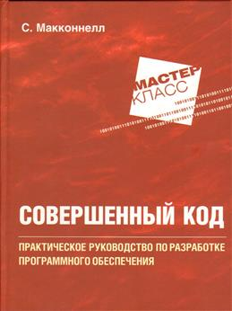

Совершенный код. Практическое руководство по разработке программного обеспечения
|  |
|
| Автор: |
Макконнелл Стив |
| Издательство: |
БХВ |
| Год выпуска: |
2022 |
| Возрастные ограничения: |
16+ |
| Количество страниц: |
836 |
|
Описание
Более 10 лет первое издание этой книги считалось одним из лучших практических руководств по программированию. Сейчас эта книга полностью обновлена с учетом современных тенденций и технологий и дополнена сотнями новых примеров, иллюстрирующих искусство и науку программирования. Опираясь на академические исследования, с одной стороны, и практический опыт коммерческих разработок ПО - с другой, автор синтезировал из самых эффективных методик и наиболее эффективных принципов ясное прагматичное руководство. Каков бы ни был ваш профессиональный уровень, с какими бы средствами разработки вы ни работали, какова бы ни была сложность вашего проекта, в этой книге вы найдете нужную информацию, она заставит вас размышлять и поможет создать совершенный код.
Книга состоит из 35 глав, предметного указателя и библиографии.